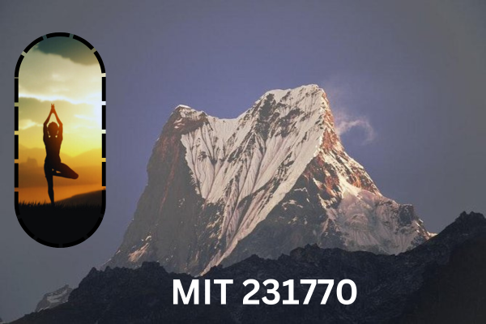

Multi-Layered Image Presentation

To prepare this multi-layered image for college in GIMP, I followed these steps:Canvas Setup: Created a new project with the required dimensions.Layer Creation: Added multiple layers for different elements, such as the background, main subjects, and text.Image Import: Imported and placed images onto their respective layers.Adjustments: Applied adjustments like resizing, positioning, and layering effects to achieve the desired composition.Finishing Touches: Applied final touches such as filters, shadows, and blending modes to enhance the visual appeal.